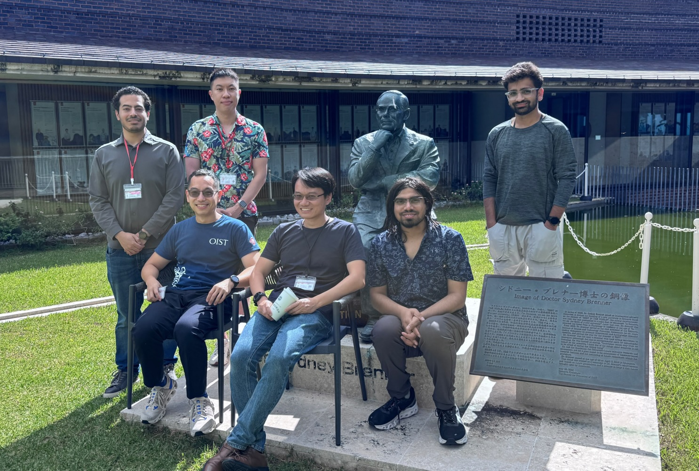

Electrifying opportunities
Join Us
We enjoy doing curiosity-driven science that is fun, beautiful, and (hopefully!) useful. We are highly interdisciplinary, bringing together physicists, mechanical engineers, and chemical engineers.
If you are a prospective student or intern, please see oist.jp/admissions. If you are a current OIST student, please send an email to me directly or come drop by my office (L5DE08).
There are no openings for post-docs for the moment, unless you come with your own fellowship, e.g., JSPS.
